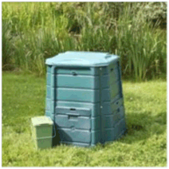

|
- Demande de
conteneurs
- Collecte sélective
bac vert
- Collecte sélective
bac bleu
- Bornes à verre
Bornes à textile
- Ramassage
des encombrants
- Composteur
individuel
- Déchèterie
de Bailly
Co
| Conteneurs à ordures ménagères/tri sélectif |
|
Merci de bien vouloir vous déplacer à l'accueil des services techniques, muni des documents demandés ci-dessous :
Première demande de conteneur (dotation) :
Le demandeur devra fournir une photocopie :
- d'un justificatif de domicile (facture EDF, téléphone, ou quittance loyer ou acte notarié, …)
- d'une pièce d'identité
- du livret de famille (seulement si la composition familiale est supérieure à 4 pers.)
Demande de changement de volume de bac (foyer supérieur à 4 personnes) :
Le demandeur devra fournir une photocopie de :
- d'un justificatif de domicile (facture EDF, téléphone, ou quittance loyer ou acte notarié, …)
- du livret de famille (justifiant de l'agrandissement de la famille)
- d'une pièce d'identité
Demande suite à un conteneur détérioré :
Aucun document n'est à fournir sauf si la composition familiale est supérieure à 4 personnes ; il faudra alors fournir les documents demandés au paragraphe ci-dessus.
Demande suite à un conteneur volé ou incendié :
Le demandeur doit fournir un dépôt de plainte préalablement établi auprès de la police municipale ou nationale.
Entreprises et commerçants :
Le demandeur doit préciser le nombre d'employés, la nature des déchets générés, et s'il dispose d'un local poubelle.
Habitat collectif :
Le demandeur doit bien préciser le volume* du conteneur ordures ménagères détérioré, volé ou incendié. Il doit également indiquer le nombre de logement par bâtiment de la résidence (ou des résidences).
* 340L (bac 2 roues) ou 500L (bac 4 roues sans poignées) ou 660L (bac 4 roues avec poignées) ou 750L ou 770L (bac 4 roues avec poignées plus haut que le 660L) ; l'indication du volume est inscrite sur le rebord droit (soulever le couvercle).
|
ntenu 1 Contenu 3
| Collecte sélective / bac vert |
|
La Commune de Serris a mis en place la collecte sélective des déchets.
- Collecte de la poubelle verte dans bourg de Serris : lundi et jeudi
- Collecte de la poubelle verte dans le centre urbain de Serris : mardi et vendredi
Les poubelles ne doivent êtres sortis que la veille du jour indiqué, après 18h00 et rentrées le jour de la collecte avant 9 heures. Le fait de déposer des déchets sur la voie publique en dehors des horaires et emplacements prévus constitue une infraction de 2e classe (de 22 à 150 euros).
> Télécharger la fiche récapitulative sur la collecte
> Télécharger le guide du tri du SAN
Ce qu'il faut mettre dans les poubelles vertes
-
Papier/Carton :
Barquettes salies contenant des "restes"
Mouchoirs jetables
Essuie-tout
Calages en polystyrène
-
Emballages métalliques :
Boîtes salies
Barquettes salies
Boites servant de mini poubelles
-
Plastiques :
Flacon de produits toxiques
Pot de crème fraîche / Yaourt
Sacs plastiques
Seul le 1er mai de chaque année est férié pour le prestataire de collecte.
Il n’y a pas de rattrapage de collecte. |
Contenu 2
| Collecte sélective / bac bleu |
|
La Commune de Serris a mis en place la collecte sélective des déchets.
> Télécharger la fiche récapitulative sur la collecte
> Télécharger le guide du tri du SAN
Collecte de la poubelle bleue : mercredi
Les poubelles ne doivent êtres sortis que la veille du jour indiqué, après 18h00 et rentrées le jour de la collecte avant 9 heures. Le fait de déposer des déchets sur la voie publique en dehors des horaires et emplacements prévus constitue une infraction de 2e classe (de 22 à 150 euros).
Ce qu'il faut mettre dans les poubelles bleues
Cette poubelle est destinée aux déchets d’emballages ménagers et aux journaux-magazines
-
bouteilles et flacons en plastique bien vidés, y compris bouteille d'huile,
flacon de savon liquide,
gel douche /shampooing,
bidon, vinaigre, ketchup, mayonnaise, etc.
-
boîtes de conserve,
-
aérosols,
-
barquettes en aluminium bien raclées
-
cannettes en métal bien vidées,
-
briques alimentaires,
-
cartonnettes,
-
journaux, magazines et prospectus.
-
pas de sacs ni autres objets en plastique…
Il ne faut surtout pas mettre de verre dans les bacs de tri sélectif. Les objets en verre doivent être placés dans les conteneurs prévus à cet effet.
Seul le 1er mai de chaque année est férié pour le prestataire de collecte.
Il n’y a pas de rattrapage de collecte. |
Contenu 4
| Bornes à verre et bornes à textile |
|
|
|
Bornes à verre et bornes à textile :
-
boulevard Robert Thiboust, en face du Centre Technique Municipal,
-
rue Émile Cloud (en face de l'église),
-
rue de l'Hermière (face au stade de football),
-
boulevard du champ du moulin
(à côté du tennis des Marmousets),
|
|
Bornes à verre uniquement :
-
rue de la Garenne (parking Parc des communes),
-
au croisement cours du Tage/ rue Marco Polo,
-
cours du Danube (à côté du lycée)
Borne à textile uniquement :
- rue de Navarre (à côté de Terre d‘Éveil)
|
Contenu 5
Date de ramassage des ordures extra-ménagères
- Mercredi 26 février 2014
- Mercredi 28 mai 2014
- Mercredi 17 septembre 2014
- Mercredi 17 décembre 2014.
Les encombrants ne doivent être sortis que la veille des jours indiqués ci-dessus.
Vous pouvez également amener vos encombrants à la déchetterie de Bailly-Romainvilliers.
Nous vous rappelons ci-après la liste des "encombrants" autorisés à être ramassés par la STE AUBINE et ceux qui ne le sont pas :
AUTORISÉS :
- les ferrailles
- les meubles
- les matelas / sommiers
- les électroménagers
- les portes et fenêtres exemptes de vitrage
- objets en plastique
- matériel de puériculture
- palettes / découpe de bois
- ameublement : literie, meubles.
- loisirs et divers : vélos, matériel informatique, poussettes et landaus, jouets etc.
EXCLUS :
- gravats (pierres, briques, tuiles, plaques fibro…),
- appareils sanitaires (baignoires, lavabos, wc…),
- appareils de production d’eau chaude (chauffe-eau…),
- déchets verts (résidus de la coupe des gazons ou des haies…),
- accessoires voiture,
- déchets ménagers spéciaux (pâteux, liquides, solides, peintures, mastics, solvants…),
- batteries auto, les produits contenant de l’amiante, les produits radioactifs…
- encombrants provenant de l’activité industrielle ou artisanale.
Les produits " exclus " ne peuvent en aucun cas être déposés sur le trottoir. Une déchetterie est à votre disposition.
Tout contrevenant sera passible d’une amende.
> site : www.smitom-nord77.fr |
Contenu 7
Le SMITOM propose aux particuliers d'acquérir des composteurs individuels de jardin, leur permettant de transformer déchets verts et fermentescibles en compost.
Cette offre est exclusivement réservée aux particuliers résidant sur le territoire du S.MI.T.O.M. du nord Seine et Marne. Offre limitée à un composteur par foyer. |
Descriptif :
Composteur en plastique vert foncé. Matériel réalisé à 100% en produits synthétiques recyclés. Délivré en kit avec un bio seau, un guide de montage et un guide d'utilisation.
Capacité : 400 litres, hauteur 85 cm, largeur et longueur 70 cm.
Poids : 19 kg.
|
 |
Comment se procurer un composteur ?
• en le fabriquant soi-même,
• en l'achetant en grandes surfaces ou dans un magasin spécialisé,
• en contactant les services du S.MI.T.O.M., et dans ce cas, afin de vous porter acquéreur d'un composteur, vous devrez adresser un chèque à l'ordre du Trésor Public au S.MI.T.O.M. du Nord Seine et Marne ou le déposer directement au siège social situé chemin de la Croix Gillet à MONTHYON. La présentation d'un justificatif de domicile vous sera exigée lors du retrait.
Horaire de retrait : du lundi au vendredi de 9h00 à 12h00 et de 14h00 à 16h00.
Vous avez la possibilité de le réserver en ligne : www.smitom-nord77.fr
Tarifs des composteurs individuels
Le tarif d'un composteur compte tenu de la prise en charge d'une partie de son coût par le SMITOM est de 22 € pour le grand public.
SMITOM
Chemin de la Croix Gillet
77122 MONTHYON - France
Téléphone : (+33) 1 60 44 40 03
Fax : (+33) 1 60 44 40 05
Horaires d'ouverture du SMITOM :
- lundi au jeudi de 8h30 à 12h30 et de 13h30 à 17h00,
- le vendredi de 8h30 à 12h30 et de 13h30 à 16h30. |
Contenu 6
| Déchèterie de Bailly-Romainvilliers |
|
Remplacement des cartes d'accès en déchèterie.
Afin d'améliorer l'accueil des usagers, le SMITOM du Nord Seine et Marne procède actuellement au remplacement de l'ensemble des cartes d'accès en déchèterie.
Opérationnelle à compter du 1er janvier 2014, cette carte sera nécessaire
afin de bénéficier du service des déchèteries.
Plus pratique, elle permettra : le dépôt annuel de 18 m3 réels de déchets
en déchèteries (et non plus 18 passages), et sur simple demande au gardien de connaître l'évaluation totale de vos dépôts de déchets depuis le début d'année. De plus, le prêt de votre carte à une tierce personne identifiée sera désormais possible.
Une mesure qui vise à améliorer le suivi des déchèteries et de s'assurer
de l'accès à ces équipements aux seuls résidents du territoire du SMITOM du Nord Seine et Marne.
Pour obtenir cette nouvelle carte d'accès, procurez-vous le dépliant réservé à cet effet et transmettez aux services du SMITOM l'intégralité
des pièces demandées : photocopie
de la pièce d'identité et de la dernière feuille d'impôts locaux, ainsi que vos coordonnées complètes.
Système d'autorisation provisoire en attente de la nouvelle carte
Conscients du désagrément et des difficultés pour joindre le Smitom par téléphone engendrés par ces délais, le Smitom a mis en place un système d'autorisation ponctuelle en attente de la nouvelle carte.
Deux cas peuvent se présenter :
- Vous avez encore votre ancienne carte d'accès,
Il vous est toujours possible de déposer vos déchets. Votre carte sera reprise par le gardien après vidage.
- Vous n'avez plus votre ancienne carte.
Il vous suffit de télécharger le Formulaire d'autorisation (pdf - 24,21 ko) et de le remettre au gardien de la déchèterie dans laquelle vous vous rendez.
Attention : vous devez toujours présenter un justificatif de domicile et une pièce d'identité. Le volume reste limité à 18m3 par an.
Cette organisation temporaire devrait permettre de faciliter l'accès aux décheteries dans l'attente de la nouvelle carte.
> www.smitom-nord77.fr
> Télécharger le formulaire de carte d'accès
|
| |
 |
- gravats,
- déchets verts,
- huile moteur,
- radiographie,
- verre,
- batteries automobiles,
- cartons papiers
- ferrailles et divers (textile, matelas).
|
Horaires d'hiver (du 1er novembre au 28-29 février)
- Lundi : 10h-12h00 / 14h00 - 17h00
- Mardi : 10h00-12h00 / 14h00 - 17h00
- Mercredi : 10h00-12h00 / 14h00 - 17h00
- Jeudi : 10h00-12h00 / 14h00 - 17h00
- Vendredi : 10h00-12h00 / 14h00 - 17h00
- Samedi : 9h00 - 12h00 / 14h00 - 17h00
- Dimanche : 10h00 - 13h00
|
|
Horaires d'été (du 1er mars au 31 octobre)
- Lundi : 10h00-12h00 / 14h00 - 18h00
- Mardi : 10h00-12h00 / 14h00 - 18h00
- Mercredi : 10h00-12h00 / 14h00 - 18h00
- Jeudi : 10h00-12h00 / 14h00 - 18h00
- Vendredi : 10h00-12h00 / 14h00 - 18h00
- Samedi : 9h00 - 12h00 / 14h00 - 18h00
- Dimanche : 10h00 - 13h00
- Fermeture : 25 décembre, 1er janvier, 1er mai
|
| Déchèterie de Bailly-Romainvilliers |
|
|
|
Adresse : lieu dit la mare houleuse
Téléphone : 01 60 42 49 56
> site : www.smitom-nord77.fr |
|
Smitom du nord Seine et Marne
Chemin de la Croix Gillet - 77122 Monthyon
Téléphone : 01 60 44 40 03
Répondeur vocal : 01 60 24 75 70
contact@smitom-nord77.fr |
|
| |
|
|
|
|